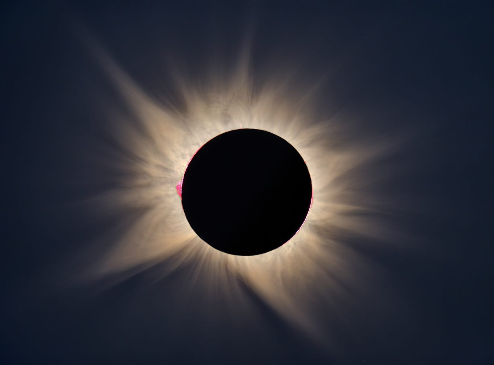
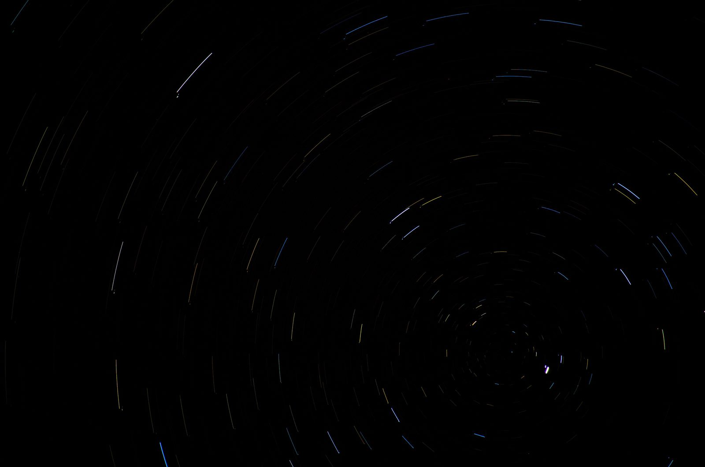
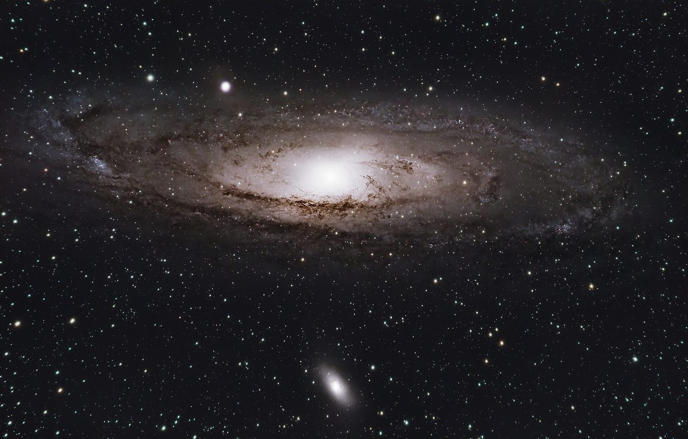
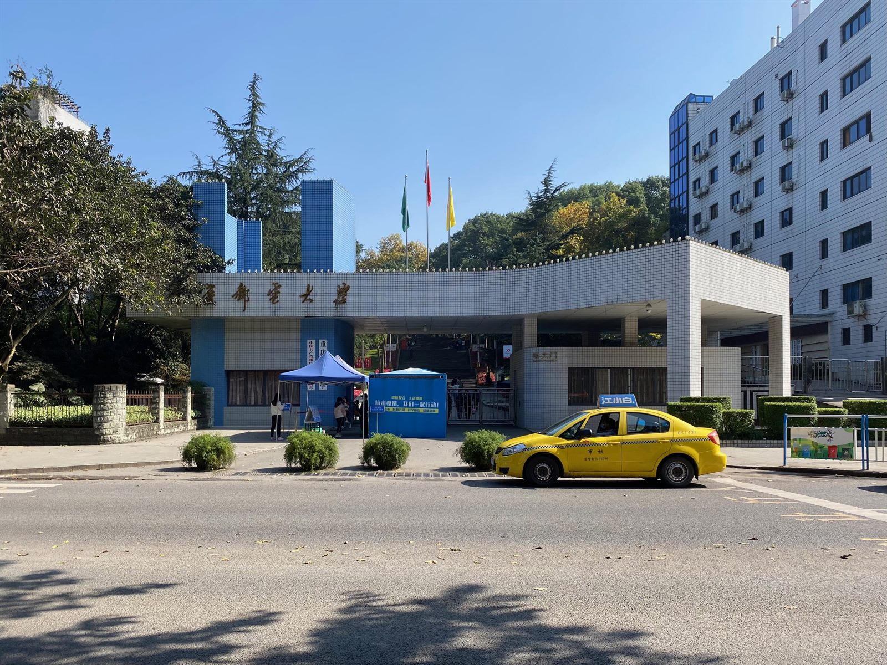

在雾都，
等一个晴夜
重庆邮电大学天文爱好者协会
重庆的年均日照时数只有约 1,200 小时，是全国最少的地区之一。一年里能看清银河的夜晚，两只手数得过来。所以我们把每一个晴夜都当成节日过。
为什么是重庆
低日照、高湿度、常年不散的雾，山城的每一层空气都在跟星光作对。可也正因为如此，这里的人对晴夜有一种别处没有的珍惜——中午看到云缝里透出蓝色，晚上八点就有人在群里问「今晚出不出」。
重邮在南山之巅，海拔约 500 米。往南走二十公里是金佛山，再往东是武隆的仙女山。城区里只能看月亮和大行星，想看银河，就得往山里跑——这件事本身也成了协会活动的一部分。
我们做什么
-
路边天文
每月一次，把望远镜搬到春华广场。排队的多半是第一次看土星的人，他们的第一句话通常是一声「哇」——这声音我们听了十年也不腻。
-
深空摄影
一台赤道仪、一台改了冷冻的相机、三十张五分钟的曝光，再加几个小时的对齐叠加。成品是一个模糊的星系，过程是一整夜的耐心。
-
流星雨守夜
每年八月英仙座、十二月双子座，我们包车去仙女山。裹睡袋躺在草地上，一晚上许几十个愿，多数人凌晨三点就睡着了。
-
梅西耶马拉松
从日落到日出，一夜之间跑完 110 个深空天体。它考验的不是设备，是体力、星桥法和运气。至今协会最好成绩是 87 个。
今晚的天
下面这一屏不是写死的：打开页面的那一刻，程序用 JPL 的近似轨道根数现算了一遍。时间取重庆（北纬 29.56°），可见标准为「天文昏影结束后、地平高度高于 10°」。
去哪儿看
光污染是我们唯一无法用设备克服的敌人。刚进协会的人总想买更大的口径，我们一般先劝他买一张去山里的车票。
- 南山校门口出发 20 分钟Bortle 7应急用。只适合月亮、金星、木星这类目标。
- 缙云山1 小时车程Bortle 5能看清亮的深空天体，银河勉强可辨。
- 金佛山2.5 小时车程Bortle 4银河清晰，是我们日常出勤的主力观测点。
- 仙女山3.5 小时车程Bortle 3年度守夜地。要过夜，要提前订房，要认命地熬夜。
影像
下面每一张都来自公开授权图库，署名在图片下方。它们记录的不是我们自己的作品，而是我们想看到的东西。




加入我们
- 招新
- 每年九月，百团大战的 47 号摊位
- 例会
- 每周四 20:00，图书馆前广场（晴天）
- 群
- QQ 群 000000000
- 器材
- 协会现有 130 mm 反射镜两台、C8 一台、10×50 双筒四台
不需要任何基础，也不需要自己带设备。你只需要在一个晴天的晚上，出现在广场上。
写信给我们